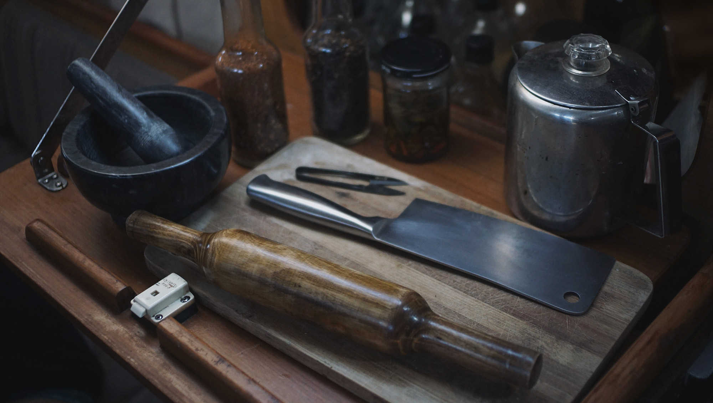

Tools
Entering a store with the goal of purchasing new kitchenware is dizzying, there are many choices, but few are worth your money and attention. For a tool to have a place in your home, it needs to be effective and versatile. I made this list of notes on what qualities to look for, based on experience and research:
- Durability: Choose a material that will last, of finer grade, or that can be composted.
- Simplicity: Prioritize unibody tools, the fewer parts the better. Opting for non-electric is important for that same reason. Less prone to breakage.
- Multi-functional: Having too many tools that have a single function adds clutter to our home.
Note: If you look at the photo, you can see that my kitchenware doesn't have all the features listed above. That's because this list is an ideal, a study of what an optimal tool-set would be. It may not be realistic to you, and that's okay. In the end, you've got to work with what you have. The resulting food matters more than the tools you use.
- Cutting boards
- Manual coffee grinder
- Mortar and pestle
- Cleaver
- Shears
- Rolling pin
- Pressure cooker
- Skillet
- Food Chopper
Cutting boards
Material: Opt for a maple or bamboo hardwood cutting board. Avoid plastic. Contrary to popular belief, it is not more sanitary and can harbor a lot of bacteria. A knife-scarred plastic surface is difficult to disinfect, studies have shown that washing the board – whether by hand or with a dishwasher – was not enough to kill lingering bacteria.
Wood doesn't scar as much, and is the preferred material. After cleaning, let it dry before storing it.
- Comparative studies on hygienic qualities of wood and plastic cutting boards in a laboratory Dr. Ulrike Kleiner, the Laboratory of Hygiene Research at the Anhalt University in Bernburg, Germany
- Plastic and wooden cutting boards Dr. Dean O. Cliver, University of California, USA
Jump back to top
Manual coffee grinder
If you enjoy coffee, getting a grinder should be on the top of your list. Grinding your own beans, means you can choose the size of the grind to match the selected brewing method.
Material: Choose a manual grinder with ceramic burrs. The two plates crush the beans into even grinds, it's the best way to release the oils responsible for the flavor of the coffee. Steel burrs, while cheaper, don't last as long as the ceramic kind. Aim for long-lasting rather than cheap. As for blade grinders, they produce an uneven grind and aren't ideal.
- The effect of bean origin and temperature on grinding roasted coffee Uman, E. et al. Sci. Rep. 6, 24483; doi: 10.1038/srep24483, 2016
Jump back to top
Mortar and pestle
Before choosing a mortar and pestle, determine its usage. Will you grind spices with it? Nuts? Fibrous herbs? Your intended use will affect the choice of material.
Material: The best material, for the most varied jobs, is granite. Its weight and irregular surface makes it easy to grind most spices, nuts, it can also handle fibrous herbs.
If you have no intention of grinding nuts and herbs, a marble mortar with a smooth surface is good. Wood mortars aren't the best choice, that is, unless you want to re-use it for the same purpose. Flavor lingers into the bowl, and may result in unwanted tastes in other recipes. There are other materials to consider, but a heavy, textured, granite bowl is your best bet as a good all-around mortar.
Jump back to top
Cleaver
The cleaver, or the Chinese chef's knife, is a less brutish version of the meat cleaver. This tool has a wide variety of uses, with it you can dice, slice and julienne vegetables. The flat of the blade is wide and ideal to scoop up chopped produce. It's useful to transfer items from a cutting board to a pan or pot. There is no real need for other knives in your arsenal.
Material: When selecting your cleaver, aim for a harder grade of steel – somewhere between 57-58 on the Rockwell Hardness Scale. Good steel produces a finer edge, and holds its sharpness. The angle of the blade is also important. 22 degrees is most common and this too, ensures longer-lasting sharpness. Chinese cleavers are carbon steel, but because they rust stainless steel is better (a mixture of carbon and SS is also good).
Shape: The handle of the cleaver should not be too thick or too small. The size has to allow the hand to wrap around it and has to come close to touching the other side of your thumb.
Jump back to top
Shears
Traditional Japanese shears, or Nigiri, can be used to cut some herbs from the garden to add to a meal, or cutting dried mushrooms or chilies into smaller bits, there are over 100 uses for it.
Material: Most shears are carbon steel, stainless steel is again, preferable.
Shape: Japanese metalworkers forge Nigiri using a single piece of metal. It's designed to spring back to the open position when released. While the design is simple and durable, it offers more precision than scissors. A pair with blades that make more than half of the length of the tool, will permit for a greater variety of uses. The shears rest inside your hand, between your index finger and thumb, giving greater control of the speed of the cut. This tool is also ideal for left-handed people, making cutting a pain-free experience.
Jump back to top
Rolling pin
A simple tool, essential for baking at home.
Material: Choose a hardwood like maple, its strength and ease to clean makes it ideal.
Shape: A good rolling pin will not have handles, and will often cost less. According to experts, having no handles gives a better sense of the dough. Aim for a tapered french-style pin. Its shape permits rolling the dough into rounds and oblongs with ease.
- The best rolling pin Wirecutter, 2017
Jump back to top
Pressure cooker
A stove top pressure cooker helps save time and energy, while providing quick meals. This handy device produces complex simmered dishes under 60 minutes.
Material: Aim for Stainless Steel.
Shape: Pick an 8-Quart model, with a spring-loaded valve and pressure indicator. If you chose well, this is a tool that you will follow you into old age. Models with bases of at least 7mm keep heat better, reach pressure faster and keep food from burning. Pick a cooker that offers a low pressure setting of 8-9 PSI per square inch and a high pressure setting of 15 PSI. Anything else is below standard, and will result in your food not cooking well. A pressure cooker can also serve as a regular large stock-pot without the lid.
- The best pressure cooker Wirecutter, 2018
- Stovetop pressure cooker Cook’s Illustrated, 2013
- Test Drive: Pressure Cookers Nicki Pendleton Wood, Fine Cooking, 2011
Jump back to top
Skillet
Skillets are used to stir-fry, bake, simmer and cook a grand variety of dishes.
Material: Cast-iron is the material of choice. It is durable, cheap, and offers more versatility than stainless steel skillets. It's used to cook in the oven, and is safe past 500 degrees. Cast-iron cookware gets better with time as it develops layers of seasoning. Buying a pre-seasoned skillet is best. Cooking in cast iron pans helps with your daily nutritional requirements of iron.
Shape: A large cooking area is ideal, with large spouts to pour out contents with ease. Skillet are heavy, choosing one with rounded-stick handles makes it easy and more comfortable to lift.
Jump back to top

Food Chopper
Hand-operated food choppers — more commonly known as 'meat grinders' — are handy for grinding nuts, sprouts, dried foods, fresh fruits, vegetables, etc.
Material: Stainless steel is the material of choice, as it is durable and doesn't rust. Although older tin-coated cast-iron models are also fine, but it is important to dry, and oil the grinding plates after use.
Shape: A robust clamp with rubber pads for easy attachment to any table or kitchen surface is important.
Jump back to top